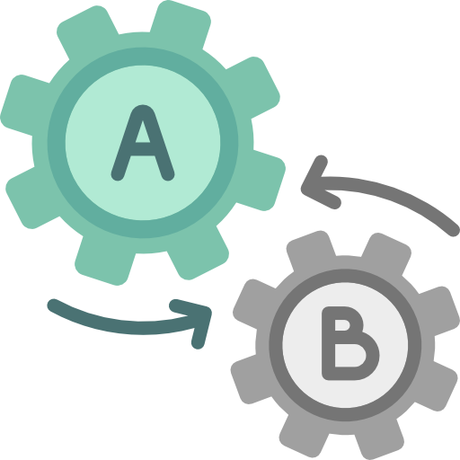

About Me
백엔드 개발자를 꿈꾸는 박철우입니다.
국비지원 교육과정에서 프로젝트를 진행해보면서
학교에서 배웠던 것을 깊게 알게되고 배우지 못한 부분을 알게되었습니다.
웹 프로젝트를 개발하면서 팀과 협업하여 생각하고 기획하여 구현물까지
도출하는 것에 재미와 보람을 느꼈습니다.
사용자 입장에서 생각하고 섬세함을 갖춰 사용자의 편의를 생각하는 서비스를 개발하고 싶습니다.
SKILLS
-

FRONT-END
HTML·CSS·JavaScript·JQuery
-

BACK-END
Java·Spring·OracleDB
-

DEVOPS
Git